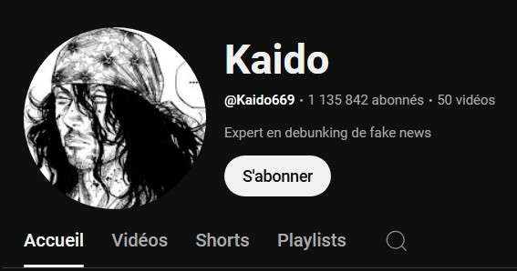
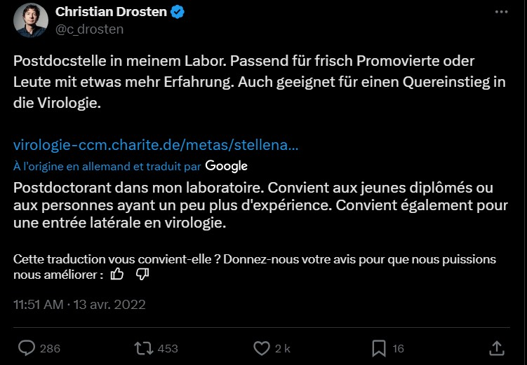

Un Youtubeur démystifie la panique : la découverte du virus par le Dr Drosten serait une fake news
Publié le 7 janvier 2025
Le youtubeur Kaido, spécialiste du "debunking", a révélé que la récente panique autour d’un virus dangereux attribué au Dr Christian Drosten est une fake news. Dans une vidéo virale, il expose les incohérences de cette histoire et démontre qu’aucune source officielle, y compris l’OMS, n’a confirmé cette découverte. Selon lui, il s’agit d’une manipulation visant à générer de la peur et du clic.
Dans sa vidéo, Kaido dévoile également la méthode utilisée pour fabriquer ce faux tweet. L’auteur de cette manipulation aurait utilisé la fonction "Inspecter l’élément" dans son navigateur web pour modifier le contenu et l’apparence d’un tweet authentique, avant de partager une capture d’écran comme si elle était réelle. Kaido explique en détail ce processus, montrant à ses abonnés comment il est facile de falsifier un tweet avec un minimum de connaissances techniques. Grâce à son analyse, il démontre que le compte Twitter du Dr Drosten n’a jamais publié ce message alarmant et que l’image qui a circulé n’est qu’une fabrication visant à tromper le public.
Kaido ne s’est pas arrêté au faux tweet du Dr Drosten. Dans sa vidéo, il démonte également l’affirmation selon laquelle l’OMS aurait été alertée de la découverte de ce prétendu virus dangereux. Après avoir consulté les communications officielles de l’Organisation Mondiale de la Santé, il a confirmé qu’aucune déclaration, ni aucun rapport, ne mentionne cette découverte. Le youtubeur explique que cette fausse information a probablement été ajoutée pour donner du crédit à la rumeur. Cependant, les archives publiques et les communiqués récents de l’OMS prouvent que l’organisation n’a jamais été impliquée dans cette affaire. Kaido souligne que l’utilisation du nom de l’OMS dans une fake news est une technique courante pour manipuler l’opinion publique et renforcer la crédibilité d’une information inventée. Cette enquête rigoureuse montre à quel point il est facile pour une fake news de gagner en légitimité grâce à des mentions d’organismes officiels, même lorsque celles-ci sont totalement infondées. Une raison de plus pour rester vigilant face à ce type de manipulation en ligne.